All the Client, Server, Internet Stuff is not new for me because i'm a network guy :-).
<p>Content</p> is an HTML Tag
<p attribute="value">Content</p> is an HTML Tag with an Attribute
Some Tags don't need to be closed. These are Void Tags. Example <img>
There are Inline and Block elements.
Inline Elements are just manipulate the written Text.
Block Elements are build an invisible Box thourgh the Element
<span> is an inline Element and <div> is a block element.
Computers are stupid. Write exactly what the Computer understands. Otherwise the Code will not work
Don't forget to close your Tag </tag>
HTML and CSS are both "languages"
HTML controls the "structure" of a web page.
CSS controls the "style" of a page (how it looks).
When programmers talk about the DOM they are talking about the tree-like structure of a page.
Structure means, that every HTML Document looks same from ground up. You have the <html> element on top of the page. Then you have the <head> and <body> element as child elements of <html> and so on.
So you have a top element and the structure goes down to one or many child elements. But all begins from the Root element.
All HTML Elemets are Rectangle Boxes
Always use and Texteditor for special puroposes to make your content. For example use one with Syntax Highlighting.
CSS Reference GuideYou could select by element in CSS Selector. Then you have to use this code for Example.
h1 {
background-color : black;
color: white;
}
All h1 Elements would now have the Style as configured
You could also Select by class. Then the Style would applied to all Elements with the attribute of the Class. Class selector starts with a ..
.headline {
background-color : black;
color: white;
}
Now all Elements with the attribute class="headline" would the Style applied.
<head>
<style>
div {
background-color : red;
}
</style>
</head>
There you have to specifiy a seperate CSS File in your HTML File header.
If the CSS File is not in the same folder you have to specify the Path to the File.
<head> <link rel="stylesheet" type="text/css" href="main.css"> </head>
You should not do this because you have to do this for every Element again. Your code base will grow very strong. This means repetition of Code.
<div style="background-color: red; color: white">
You have in the Box Model four different Types of Borders. The types are Content, Padding, Border and Margin. All Boxes has seperate properties. You can calcualte the Box Size in pixels (px) or in percents.
If you want to calcualte the Width of the Boxes Padding and Border together, you have to use these CSS Options.
-webkit-box-sizing: border-box; -moz-box-sizing: border-box; -ms-box-sizing: border-box; box-sizing: border-box;
As div elements are Block elements, by default they use the entire width of a page. With the CSS Attribute flex you can Change the Box ordering on the Page. In this Guide is the Flexbox Attribute explained.
1. Look for natural boxes
2. Look for repeated styles & semantic elements
3. Write your HTML
4. Apply Styles (from BIGGEST to smallest)
5. Fix things
Stage 2: Udacity cs101: Building a Search Engine
Five Points thinking like a Programmer:
1. Procedural Thinking
2. Abstract Thinking
3. Systems Thinking
4. Technological Empathy
5. Debugging
The Backus-Naur Form
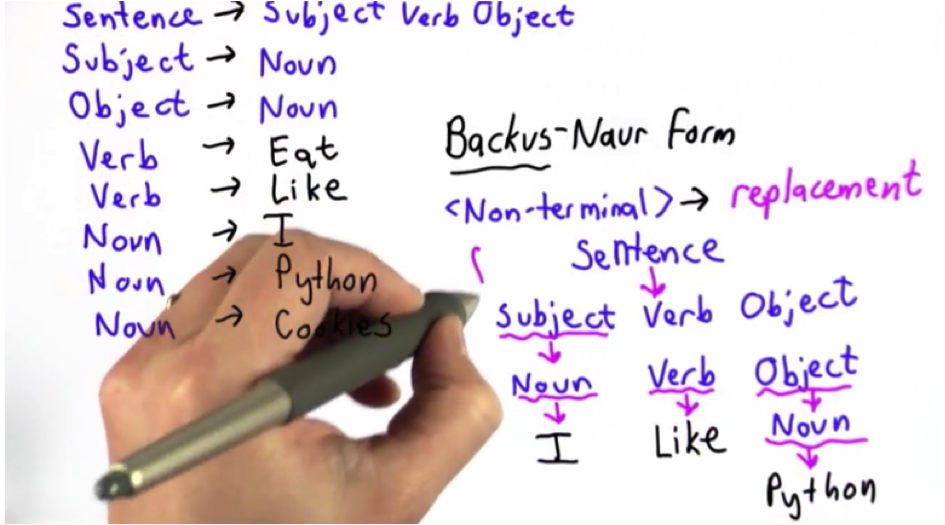
The Backus-Naur From gives a Grammar help for Computer Languages. In the Screenshot you see all Violet Words are Non-Terminal. These Non-Terminals are not finished and you have to go further.
Wikipedia LinkComputer
A Computer is a device that executes a program. He can execute it really fast and without breaks.
Program
A program describes a very precise sequence of steps. Since the computer is just a machine, the program must give the steps in a way that can be executed mechanically. That is, the program can be followed without any thought.
Programming Languages, Interpreter, Python
There are many Programming Languages out there. Python is an interpreted Language. That means the we write the Code in Python syntax and this Code would be interpreted by an Python Interpreter in Computer Code. The Python interpreter reads our programs and executes them by following the rules of the Python language.
Not interpreted Languages must be compiled in Computer Code before they can be executed on the Computer
Grammar
We need an exact Grammar for Computer Languages because the syntax must be exact for the Computer otherwise the code would not be understood.
In natural Languages make sentences that are not complete grammatical but people understand it.
Python Expressions
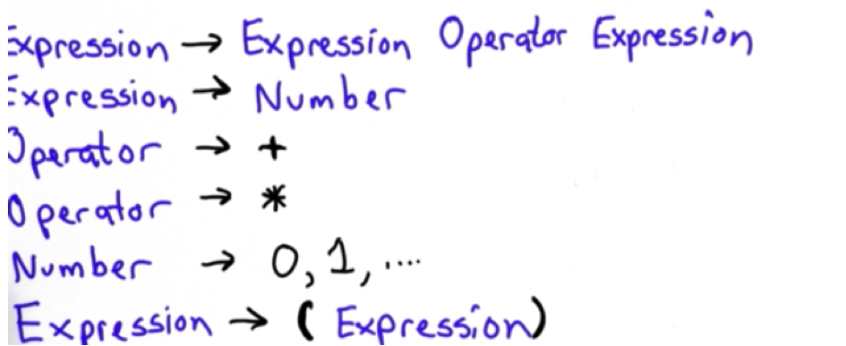
If you want an Integer expression you only have to use Integer Numbers. If you want your Expression in decimal you need to put a decimal pointer after the Number (for Example 5.9 or 6.7).
A variable is a name refers to a value. In Python, we can use any sequence of letters and numbers and underscores (_) we want to make a variable name, so long as it does not start with a number.
Assign Variables in Python:
Name = Expression
speed_of_light = 299792458
In Math equal Sign means equal, in programming it means assignment. You could see the equal sign as an arrow in Programming.
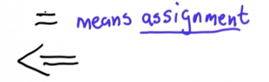
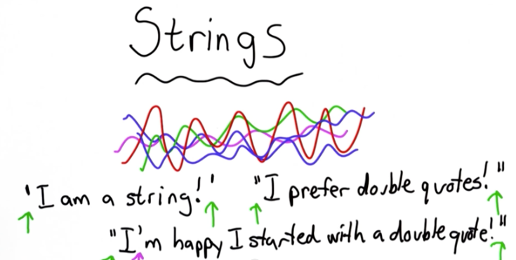
Strings has always to be closed with the same Quotiation Marks (single and double) as started. You can use the other type of marks in the String.
It is importent that the Python interpreter interprets a String only if there are quotation marks. If they not there then the interpretor means there is a number now.
To put two Strings together in Python you have to use the concatenation with + Sign. It is different meaning as it is used on numbers.
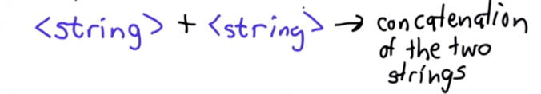
When you want to select sub-sequences from a string, it is called indexing. Use the square brackets [] to specify which part of the string you want to select.
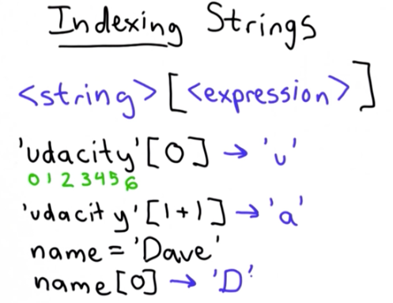
You can select a sub-sequence of a string by designating a starting position and an end position. Python reads the characters positions starting at 0, so that if we consider the string 'udacity' that has 7 characters, there are 6 positions with 'u' being in the 0 position.
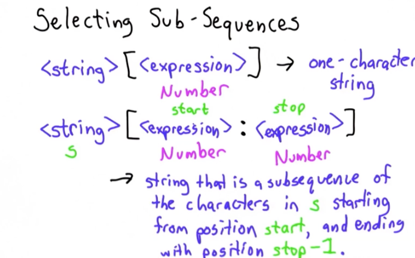
The find method is a built in operation, or method, provided by Python, that operates on strings. The output of find is the position of the string where the specified sub-string is found.
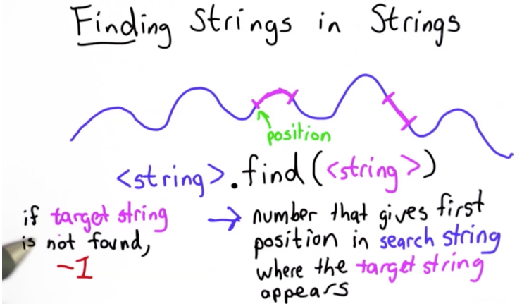
Here some Examples using find method in Python:
pythagoras = 'There is geometry in the humming of the strings, there is music in the spacing of the spheres. '
print pythagoras.find('string')
40
print pythagoras[40:]
strings, there is music in the spacing of the spheres.
print pythagoras.find('T')
0
print pythagoras.find('sphere')
86
print pythagoras[86:]
spheres
print pythagoras.find('algebra')
-1
How to Use Functions (Procedures) in Python.
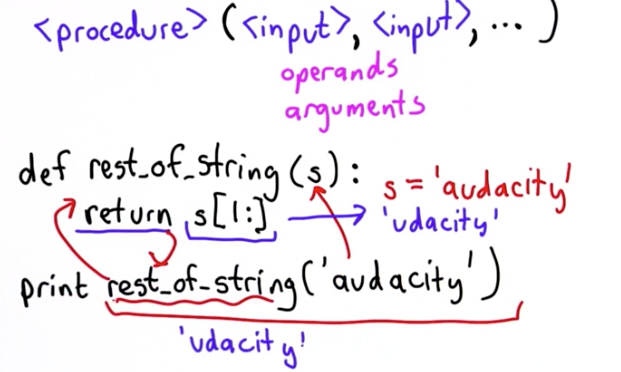
You get a String (s) as Input to the Function. The Interpreter evaluates the String and returns it with the result.
You make Functions with def <function name>.
Functions are made by starting a line of code with the keyword def and then giving a function name followed by the function parameters in parentheses. These parameters will eventually be replaced by actual values when the function is used (called).
In the "body" of the function, we write the code that specifies what to do with the input parameters. For example the following code could be the definition of a function called square:
def square(x):
answer = x * x
return answer
To use a function, we write the name of the function followed by the value(s) we want to give it in parentheses. Like this:
print square(4)
>>>16
If a function has no return statement Python returns the Keyword None.
Use triple quotes """Some multiline Text""" to create mulit-line strings in Python.
First automated Python Page Tags:
def title(title_string):
return '<h4>' + title_string + '</h4>'
def description(description_string):
return '<p>' + description_string + '</p>'
print title('My first Python Title')
print description('My first Python Auto generated Webpage')
My first Python Auto generated Webpage
In Equality Comparsion you have many Operators to use. Here some examples:
| < | value is lower than |
| > | value is greater than |
| != | value is not the same than |
| == | value is the same than |
You have to use double = for this Operation because one = defines a Variable.
If Loops
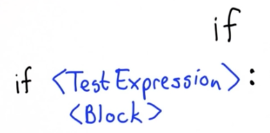
OR Operator in Python
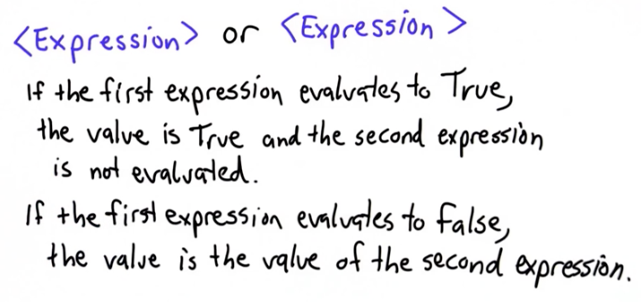
OR Operator only evaluates what he needs to. After first true in OR Operation he stops to evaluate to further expressions.
Flow Chart about Quiz biggest
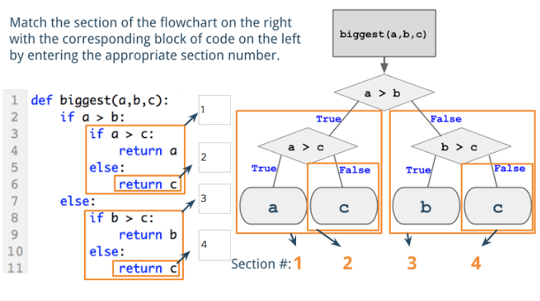
While Loops
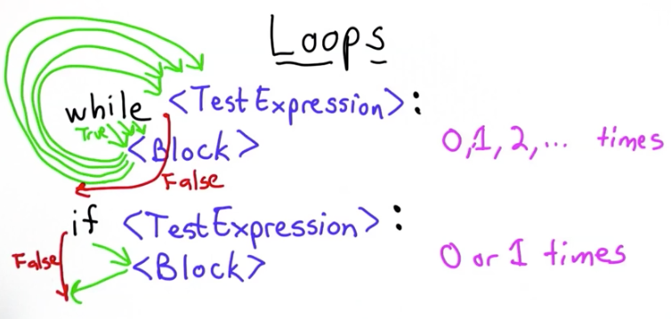
While Loops always executes the Block while the Test Expression is true. If the Test Expression is false, the while Loop ends. While Loops can keep going forever.
You can also Stop while Loops with the break statement.
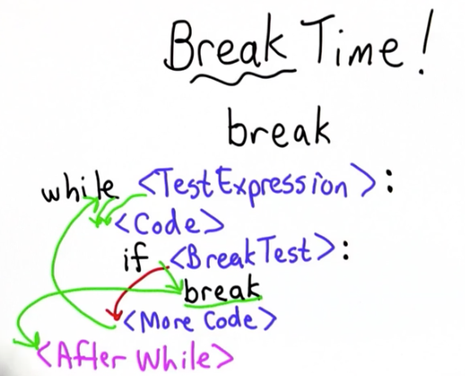
You can write every Computerprogram with:
Arithmentic
Comparsions
Procedures
if Statements
Udacity CS101: Building a Search Engine Unit 3: Data
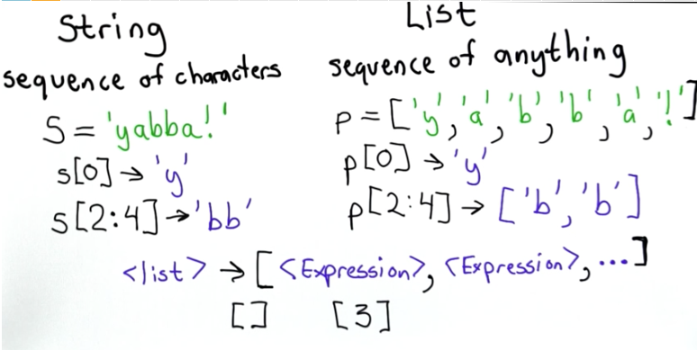
The difference between Lists and Strings is that you can store in a List a sequence of anything. In a String you can only store characters. A List is comma separated in Square Brackets. This looks very similar to Strings but it has another behavior.
Here some Codeexamples for Lists in Python:
print "EXAMPLE 1: Lists can contain strings"
string_list = ['HTML', 'CSS', 'Python']
print string_list
print "EXAMPLE 2: Lists can contain numbers"
number_list = [3.14159, 2.71828, 1.61803]
print number_list
print "EXAMPLE 3: Lists can be 'accessed' and 'sliced' like how we accessed and sliced strings in the previous lessons"
pi = number_list[0]
not_pi = number_list[1:]
print pi
print not_pi
print "EXAMPLE 4: Lists can contain strings AND numbers"
mixed_list = ['Hello!', 42, "Goodbye!"]
print mixed_list
print "Example 5: Lists can even contain other lists"
list_with_lists = [3, 'colors:', ['red', 'green', 'blue'], 'your favorite?']
print list_with_lists
You can also have Nested Lists. That means that you have a List in a List. Here is an Example of Nested Lists:
beatles = [['John', 1940], ['Paul', 1942],
['George', 1943], ['Ringo', 1940]]
You can select a List with print beatles[1]. Then you got an output of ['Paul', 1942]. But you can also select an Element in a Nested List with print beatles[1][0]. There you got the Result Paul.
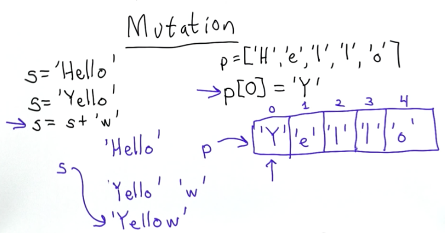
With Mutation you can change a value in a list. In the Example we Change the Value 0 = H with an Y after assignig it to the posiotion 0 in the List. In normal Strings you have to change to complete String with a new one not only one value.
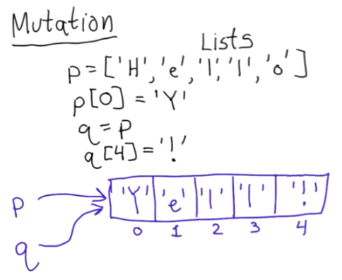
It is possible that two Variables reference to the same list. If you change one (e.g. q) the changes are made on both Variables because both are referencing the same list. This is called Aliasing.
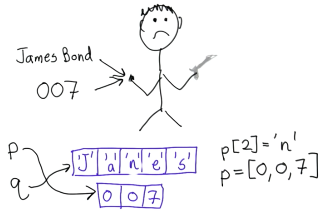
All states are the same until you give the Variable a new state.
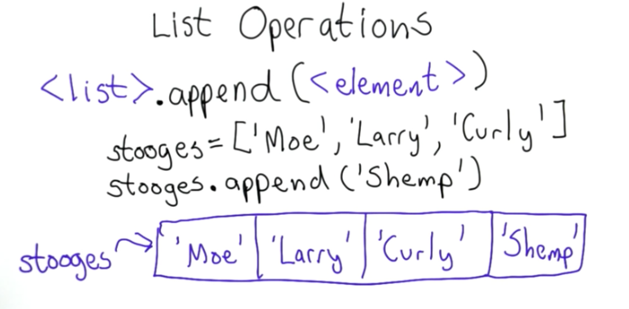
With the Method append you can add a value to the End of a List. There would not be created a new list, the append method adds the value to the existing list. If you want to add a list with append you it would be added as one element. That means in the result, you have a List in a List as you see in the Example below.
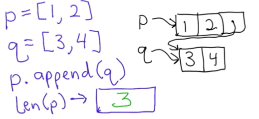
With Plus Operations you can concatenate two Lists to one list.
With the len Function you can count the Values in the List.
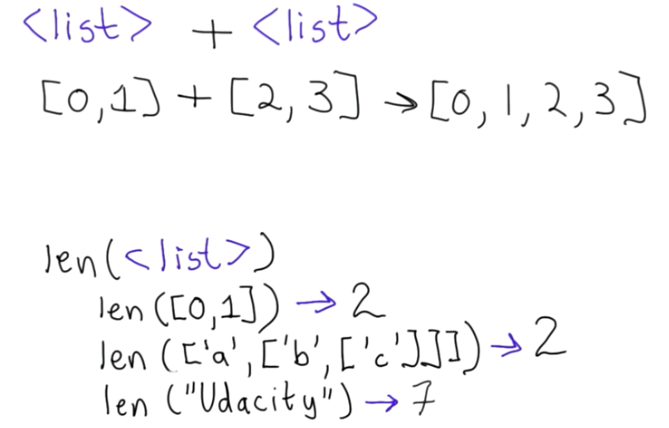
For Loops
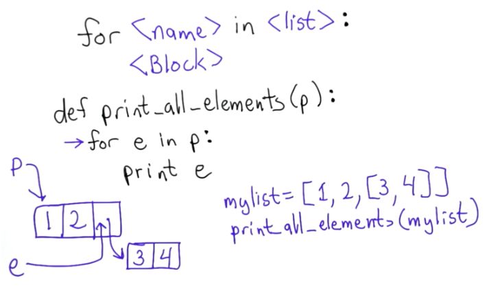
With for Loops you can go through lists and evaluate every element in the List. The for Loops iterates as long as you have Elements in the input list. A List in the List is one Element as in the len Function.
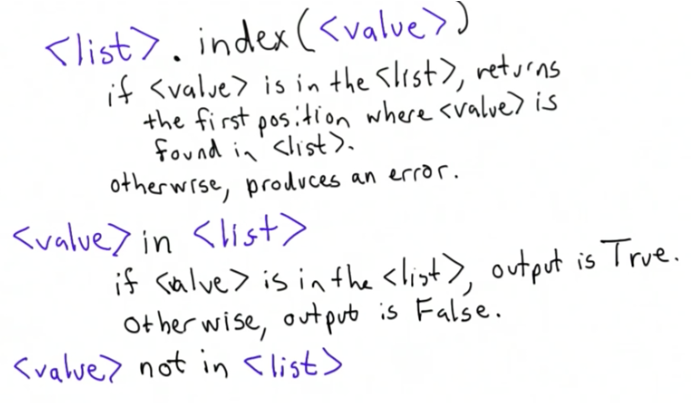
Investigating adding and appending to lists.
| + | When you use the + method, you append one or more values to the List. You can list + [5] and you get a list [1,2,3,4,5]. You can list + [5,6,7,8] and you get a list [1,2,3,4,5,6,7,8]. All these Operations generate a new List (new Object). |
| append | When you use the append method, you append one single value to the List. When you append more values then one, then you append a List in the List. You can list.append(5) and you get a list [1,2,3,4,5]. You can list.append([5,6,7,8]) and you get a list [1,2,3,4[5,6,7,8]]. But all these Operations will be done in a mutable List. No new Object would be generated. |
| += | When you use the += method, you append one or more values to the List. You can list += [5] and you get a list [1,2,3,4,5]. You can list += [5,6,7,8] and you get a list [1,2,3,4,5,6,7,8]. When you do list += [6,7,8] and list += [5] you got a list [1,2,3,4,6,7,8,5]. But all these Operations will be done in a mutable List. No new Object would be generated. |
Final Code for Stage 2
Mutable means that we can change the current object in place. We do not need to assign the variable to a new object in Python. Lists are mutable objects because we can mutate the list and not have to assign our variable a new object to take up memory in our computer.